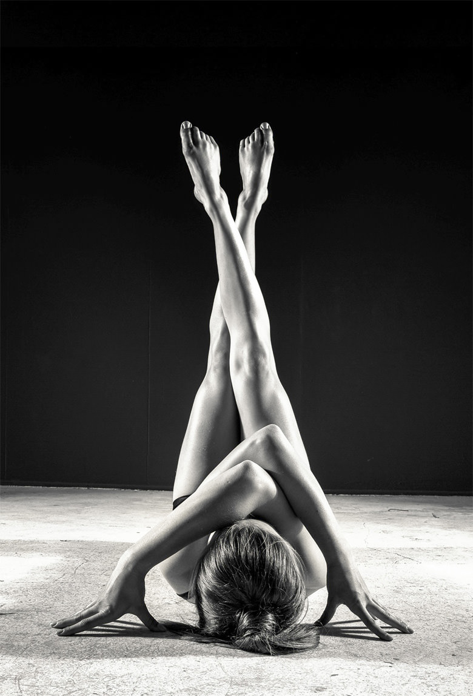
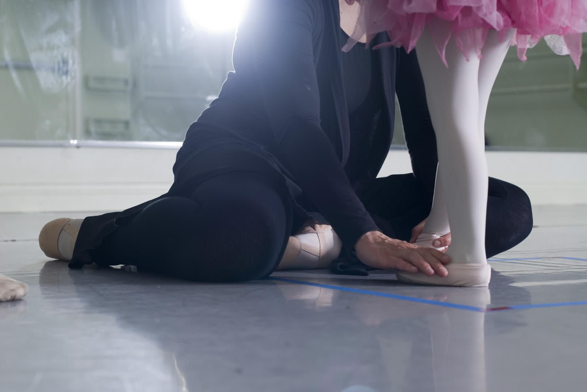

-
Neke činjenice o baletu
Balet se podučava kao praksa koja se sastoji od “pozicija” i tradicionalnih koraka u skladu s glazbom, što skoro svatko može početi učiti i to označava početak svijesti o tijelu, kontroli mišića, kao i snažnog, uravnoteženog, fizičkog držanja. Programi treninga će gotovo sigurno promijeniti način stajanja i držanja tijela, jer će se naučiti držati glavu uspravno, kralježnicu i kukove ispravno, prenošenje ispravne težine na noge, poboljšanje ravnoteže, koordinacije i fleksibilnosti, te lako i elegantno kretanje.
Balet je izazovna i zadovoljavajuća disciplina tijela koja razvija koordinaciju i mentalnu oštrinu kao i sluh za glazbu. Koristan je za bilo koji uzrast i on je siguran oblik vježbanja, čije mnoge prednosti uključuju jačanje mišića, izgradnju kardiovaskularne izdržljivosti i potencijal za povećanje fleksibilnosti. Apsolutna korist uključuje saznanje o držanju, ispravnost držanja i opće fizičko poboljšanje. Zahvaljujući izometričkim tehnikama koje se upotrebljavaju u vježbanju baleta, učenici svih uzrasta razviju dugačke, ali jake ruke i noge, te nauče upotrebljavati težinu tijela u pravcu gravitacije koja također ojačava mršavo muskularno tkivo.
Što se tiče emocionalnih i spoznajnih prednosti dokazano je da učenje baleta usmjerava učenike na razvijanje vještine odlučivanja i agilnosti, te pomaže izgraditi samopouzdanje. Balet također povećava gracioznost i disciplinu njihovih kretnji i potiče sklonost prema izvrsnim organizacijskim vještinama, razvija impresivnu razinu koncentracije, vrhunsko razumijevanje obaveza, umjetnosti i kreativnosti, sklonost prema samoizražavanju, iznimni fizički trening i zamjetan razvoj suradnje i svijest o drugim vještinama.
Učenje baleta dodatno stimulira um u timeu što pojačava kapacitet pamćenja, vještine sekvenciranja i osjećaj sebe u prostoru – prostornu i kinestetičku svijest – zahvaljujući primjeni nizanja koraka zajedno, okretaja i promjena razine, vraćanja i kretanja natraške, sve ono što može također uvelike pomoći disleksiji.
Vrijednost baleta za sve vrste plesača
Svijet plesa se danas sastoji od mnogo plesnih stilova, ali bilo da učite hip-hop, suvremeni ples ili jazz, uvijek postoji nešto što možete naučiti na satovima baleta što možete uključiti u svoje druge tehnike. Balet pruža temelj za sve ostale stilove plesa i smatra se najzahtjevnijim i najdisciplinarnijim oblikom svih plesova. Jednim solidnim temeljem baleta, plesači koji su trenirali balet mogu prenijeti svoje vještine u jazz, moderni ples, ili bilo koji drugi stil koji oni odluče pohađati. Čak i u slučaju nekih stilova plesa koji zahtijevaju slobodniju tehniku, kao primjerice hip-hop, poznavanje suprotne tehnike ojačati će kvalitetu koraka i stvoriti svestranijeg plesača. To je razlog zbog čega je današnji međunarodni trend poticanje plesača na dodavanje satova baleta kao dio plesnog plana nastave jer tako povećavaju sposobnost izvođenja svih vrsta plesa.
U nastavku su neke od mnogih vrijednosti koje balet pruža plesačima bilo kojeg stila:
- Razvija snagu i fleksibilnost kroz stilizirane i kontrolirane korake i pozicije, što u krajnjem slučaju pomaže stvoriti jednog usredotočenog, uravnoteženog, odmjerenog i fizički gracioznog plesača.
- Zahtjeva jaku fizičku i mentalnu kontrolu.
- Poboljšava fleksibilnost, držanje i ravnotežu.
- Dozvoljava veću kontrolu i svijest o tijelu
- Učvršćava gležnjeve, noge, kralježnicu, naročito u području trbuha i donjeg dijela leđa i rad stopala dobiva preciznost i brzinu.
-Oblikuje držanje, estetsku ljepotu linije i gracioznost.
- Zbog svojih linearnih pokreta, naglašava oblik, rastezanje i lakoću tijela.
- Njegova građevna tehnika ima određeni oblik i opći nacrt nastave koji razvija suradnju obiju strana tijela.
- Trenira muzikalnost plesača i osjećaj za ritam i vrijeme, jačajući njegovu sposobnost za razumijevanje raznih kvaliteta pokreta u tijelu i prilagođavanje složenijim ritmovima u drugim stilovima.
Terapeutske koristi baleta  ZNAČAJKE DJECE S POSEBNIM POTREBAMA KORISTI OD PRILAGODLJIVOG PROGRAMA BALETA Djeca s posebnim potrebama obično imaju poteškoća sa dugim nizovima verbalnih informacija i mogu imati problema sa pamćenjem slijeda informacija i sa zadržavanjem usredotočenja na jedan zadatak duže vrijeme. Baletna metoda Schlachte Method™ poučava vizualnim sredstvima i dijelovi se ponavljaju na svakom nastavnom satu. Nastava se sastoji od jednog određenog nastavnog plana koji se ne mijenja. Nakon što dijete jednom nauči kako dovršiti jedan pokret, taj pokret se koristi tako da se na njega nadogradi slijedeći pokret. Sekvence se poučavaju metodično i polako, i na taj način se naučena ponašanja nadograde kao da se dodaju karike na repertoar. Općenito se dobivaju koristi u sekvencijalnom pamćenju i prisjećanju, usredotočivanju i ustrajanju na zadatku, povećanoj samodisciplini te duljoj vizualnoj, fizičkoj i mentalnoj pažnji. Moždani krugovi koje nazivamo “zrcalnim područjima” normalno se aktiviraju kada jedna osoba vidi drugu osobu koja je povrijeđena ili trpi bol. Zrcalni krugovi su manje aktivni kod neke djece s posebnim potrebama (posebno kod autizma) u usporedbi s neuro-tipičnim osobama. Baletni plesači razvijaju “zrcalni sistem” u svom mozgu kroz ponavljanje baletnih pokreta. Zrcalni sistem postane tako jak da ozlijeđen plesač može samo pogledati snimku baleta i zadržati svoju vještinu unatoč ozlijede. Pohađanje baletnih satova može ojačati onaj dio mozga koji se treba razviti kod djece koja imaju posebne potrebe. Djecu s posebnim potrebama treba se na vrlo konkretan način naučiti kako je to biti drugome u koži. Poučavanje društvenog ponašanja djece s posebnim potrebama slično je kao trenirati jednog glumca za predstavu. Potrebno je isplanirati svaki korak. Balet se temelji na Shakespeareovim djelima i klasičnim mitovima i bajkama. Plesače baleta se uči kako izraziti emocije (ljutnju, strah, ljubomoru, radost i tugu) pomoću svojih tijela i izraza lica. Obzirom da je prvi korak u emocionalnoj inteligenciji prepoznavanje osnovnih emocija i razlike između njih, Schlachte Method™ uči djecu kako prepoznati i izraziti emocije imitirajući izraze lica. Budući da djeca s posebnim potrebama mogu imati problema s generalizacijom, oni obično bolje uče koristeći vizualnu analizu zadataka tako da rastavljaju sve korake jednog zadatka i također trebaju određene konkretne korake kako bi završili zadatak. Jedna od najuobičajenijih i najdokazanijih intervencija kod poučavanja djece s posebnim potrebama provodi se kroz Diskretni Probni Trening. Svaki baletni korak se temelji na jednom unaprijed određenom “rječniku” i poučava se tako da se rastavi svaki individualni dio cijeloga koraka. Drugim riječima, svaki ples/korak ima vizualnu analizu zadatka. Schlachte Method™ poučava svaku baletnu tehniku koristeći tehniku vizualne analize zadatka, kroz koju se svaki baletni pokret rastavi u male konkretne vizualne korake. Brzo vježbanje često pomaže djeci s posebnim potrebama da postanu uravnoteženija – bilo smanjenjem ili povećanjem njihove energičnosti. Pokazalo se da brzo aerobno vježbanje smanjuje samoozljeđivačko ponašanje i agresivnost kod djece s posebnim potrebama. Balet uvježbava čitavo tijelo ravnomjerno. Na svakom baletnom satu ima jedan dio u kojemu plesači vježbaju korake allegro (odrješite, živahne i brze korake) koji su veoma zahtjevni ali su djeci zabavni za izvođenje. Schlachte Method™ koristi predodžbe iz bajke i u mnogim vježbama djeca su usredotočena na “pretvaranje“ da su oni vilenjaci ili klauni koji iskaču iz kutije pa ni ne primijete kako naporno vježbaju. Pokazalo se da je senzorna informacija najjači osjećaj koju ljudi doživljavaju i to je ono što mozak koristi za prirodno učenje i regulaciju. Najsnažniji unos informacija u smislu aktivacije mozga postiže se pokretom i sudjelovanjem cijelog tijela. Prema tome, djeca s posebnim potrebama najbolje uče u okruženjima u kojima mogu koristiti cijelo tijelo u pokretu za učenje jednog zadatka. Svaki pokret u baletu koristi učenikovo cijelo tijelo (od nožnih prstiju do nogu, bokova, torza, glave pa sve do vrhova prstiju ruku). Zbog toga sudjelovanje u satovima baleta daje djeci sposobnost da aktiviraju svoj mozak prirodnim pokretima cijeloga tijela. Schlachte Method™ također osigurava poučavanje učenika na sve načine učenja: kinetički, vizualno, auditivno i verbalno. Djeca s posebnim potrebama imaju slabu svijest o svom tijelu i proprioceptivnim vještinama i možda trebaju vidjeti svoje ruke i stopala da znaju gdje se nalaze. Na svakom nastavnom satu baleta koriste se zrcala kao glavni nastavni alat. Djeca sebe vide tijekom cijelog sata kako bi prilagodili svoje pokrete ili vidjeli gdje se nalaze njihova tijela u prostoru. S vremenom ponavljanje izvođenja pokreta pred zrcalom jača djetetovu svijest o njegovom tijelu. Schlachte Method™ također koristi kvadrate na podu kako bi djeca mogla naučiti granice osobnog prostora i kako bi tu vještinu s vremenom internizirala. Postoje opće koristi za koordinaciju ruka-oko, fizičku snagu i ravnotežu. Budući da djeca s posebnim potrebama obično misle vizualno, oni se ističu u vizualnim i prostornim vještinama i imaju problema u učenju stvari ili vještine koje se ne mogu zamisliti u slikama. Jedini način na koji djeca mogu učiti je gledajući plesače baleta kako plešu, a ne čitajući knjigu ili pripovijedanjem. Baletni plesači uče gledajući druge i sebe (pomoću zrcala). Djeca s posebnim potrebama često trebaju vrlo strukturirano poučavanje. Jedna vrlo strukturirana nastava s određenim rutinama, vremenima i ritualima može pomoći djeci s posebnim potrebama unijeti red u njihov kaotični unutarnji svijet i smanjiti strah. Balet je vrlo strukturirani oblik umjetnosti sa specifičnim tehnikama i pravilima za svaki pokret. Svaki baletni sat ima određeni nastavni plan koji slijedi u svakom pojedinom satu. Čak i opći kontekst sata je niz rituala (od odijevanja baletne odjeće i zagrijavanja, pa do vježbe na baletnom štapu i na podu, lančanih izvedbi, itd.) I ovdje, Schlachte Method™ koristi vizualni plan te uvijek održava nastavu u sekvenci DVD-a, kako bi djeca razumjela strukturu sata i što se od njih očekuje. Ovo smanjuje djeci nelagodu i dozvoljava im da se mogu više usredotočiti na stvarno učenje vještine. Riječi o prostoru možda nemaju nikakvo značenje dok se ne prikažu u vizualnom kontekstu. Schlachte Method™ koristi rekvizite i demonstraciju kako bi se učenicima pokazalo pomoću vizualnih sredstava kako se pravilno kretati kroz prostor, razvijajući sposobnost djeteta za apstraktnu obradu informacija, te im pomaže pri motoričkom planiranju i koordinaciji. Djeca s posebnim potrebama imaju teškoću s prijelazima koje ne mogu vizualizirati. Sustavi vizualne komunikacije mogu biti korisni u poučavanju i obavještavanju pojedinaca o tome što je planirano te što se od njih očekuje. Svi baletni pokreti temelje se na nekoliko malih pokreta. U baletnoj nastavi ti se pokreti nadograđuju na polagan ritualiziran način (npr. učenici najprije nauče pregibati stopalo i usmjeriti ga, prije nego što nauče osnovni “tendu”.) Novi pokreti poučavaju se na temeljima koji su već poznati učeniku. Schlachte Method™ pomoću vizualnih planova i određenog programa omogućuje djeci planiranje i očekivanje sadržaja. Djeca s posebnim potrebama obično vrlo pozitivno reagiraju na glazbu. Glazbeno/vizualno pamćenje djeteta nalazi se u donjem primarnom vizualnom i auditivnom korteksu, a izgleda da je to dio mozga na koji ne utječu određeni razvojni problemi poput autizma. Svi baletni pokreti i mimika su usklađeni s klasičnom glazbom. Glazba Schlachte Method™-e je specifično skladana i pomaže djetetu usvojiti sve emocionalne i fizičke prednosti baleta. Dokazano je da je glazba terapija koja pomaže djeci s posebnim potrebama u društvenoj interakciji s drugima (tj. glazba svira, a dijete mora dodati loptu drugoj djeci vremenski usklađeno s glazbom). Balet poučava djecu kako plesati/raditi zajedno i dodirivati jedan drugoga na način da to bude manje opasno za djecu, zahvaljujući činjenici da se sve to odvija na jedan način oblikovan prema glazbi. Kod djece s posebnim potrebama glazba povećava raspon pažnje, motivaciju i emocionalni angažman tijekom aktivnosti koji uključuje glazbu. Poučavanje plesa uz glazbu može pomoći stvaranju organizacijskih struktura koje se mogu koristiti za izgradnju jezične kompetencije. I opet, balet je vezan uz glazbu. U baletnoj nastavi djeca uče kako interpretirati glazbu ritmički i emocionalno, a vježbe se polagano izgrađuju počevši sa vrlo kratkim ulomcima glazbe/pokreta, pa sve do puno duljih koji postepeno povećavaju duljinu raspona pažnje kod djeteta. Djeca s posebnim potrebama mogu u glazbi razaznati nijanse koje ne mogu prepoznati u drugim oblicima (tj. djeca s posebnim potrebama mogu reći koja je glazba “vesela/tužna”, ali ne mogu razlikovati vesele/tužne izraze lica). Balet je interpretacija glazbe. Balet može ispričati priču, izraziti raspoloženje ili jednostavno odražavati glazbu. Baletne plesače se uči od prvog sata kako interpretirati raspoloženje glazbe i/ili priče koju pripovijeda ta glazba. Kroz Schlachte Method™-u djecu se uči kako fizički djelovati na neke emocije putem mimike lica/tijela. Mnoga djeca s posebnim potrebama su isključena iz sudjelovanja u umjetnosti zbog svojih problema i tako ne mogu usvojiti društvene i emocionalne koristi klasičnog plesnog obrazovanja. Prilagodljivi baletni program nudi djeci iskustvo klasičnog plesa i vodi svu nastavu kao tradicionalne satove plesa, ali nudeći dodatnu podršku putem vizualnih nastavnih planova, DVD-a, modifikacije ponašanja, rekvizita i drugih sredstava. Na taj način djeca poboljšavaju svoje samopouzdanje i samouvjerenost, učeći jednu vještinu koja ima kulturnu vrijednost. Sudjelovajući u nastavi plesa, dijete ne dobije samo neposredne koristi plesa, već također dobiva mogućnosti za udruživanje i povezivanje unutar zajednice.
Potpuna integracija djeteta

Potpuna integracija djeteta odnosi se na koristi za tijelo i um koju posebna aktivnost donosi svakom djetetu, u ovom slučaju učenje baleta pomoću metode Schlachte Method™, bez obzira na njegove sposobnosti, razvijajući i jačajući posebne fizičke i mentalne vještine koje recipročno hrane jedna drugu i koje se integriraju kako bi formirale jedno potpuno funkcionalno biće. Drugim riječima, ples obuhvaća čitavo dijete, jer pokret aktivira živčani sustav kroz cijelo tijelo, te tako pretvori čitavo tijelo u instrument učenja. Svi aspekti razvoja – neurofiziološki, emocionalni, motorički, spoznajni, osjetilni, društveni, estetski i meta-osjetilni – djeluju na ostale aspekte i moraju se integrirati s motoričkim razvojem kada djeca počinju komunicirati kreativno putem pokreta.
Tijekom učenja po metodi Schlachte Method™ uključi se čitav mozak i obje se hemisfere mozga aktiviraju kada se učenicima kaže da vježbaju obje strane tijela i da misle o cijelom tijelu. Osim toga, putem raznih spoznajnih poticaja (vizualnih, auditivnih, opipnih i sl.) i putem promatranja, planiranja, izvršenja i ponavljanja pokreta popraćenih glazbom, balet pomaže motoričkom planiranju, povećava spoznaju o tijelu, poboljšava vestibularni sistem (ravnotežu i pokret), jača proprioceptivne vještine (poziciju tijela i gdje se dijete nalazi u usporedbi s drugima, u sobi i kako se njegovo tijelo kreće) i doprinosi osjetilnoj integraciji (interpretacija, procesu, i integracija osjetilnog poticaja koristeći se raznim osjetilima i potpunim uključenjem cijeloga tijela).
Osim toga, tehnika klasičnog baleta zahtjeva podizanje na vrhove stopala ili nožnih prstiju, okrećući nogu prema van na visini bočne rupe i održavanje visoku ispruženost noge prema naprijed, na stranu i otraga, među ostalim fizičkim manevrima. Stalno ponavljanje ovih vježbi ne samo da razvija velike i fine motoričke vještine, već isto tako jača fleksibilnost i gradi znatnu jačinu u određenim područjima tijela. Naročito u boku, trbuhu, donjem dijelu noge, u gležnjevima i stopalima. Budući da baletne vježbe zahtijevaju dobro držanje, balet pomaže postizanje dobrog držanja i stvaranje svijesti o dobrom držanju. Pošto se kralježnica i trbušni mišići razvijaju i jačaju putem vježbanja baleta, ravnoteža i koordinacija se također poboljšaju. Takvo poboljšanje ravnoteže i koordinacije omogućuje djeci bolje trčanje i igranje, jačajući na taj način njihovo samopouzdanje i društvene vještine.
Učenje baleta također uključuje vještine memorije i sekvence jer ono tjera djecu na pamćenje koraka i izvođenje sekvence pokreta, omogućujući učenicima izvođenje kompleksnih pokreta tako da hodaju polako (rastavljajući pokrete u manje korake), kodificiraju korake (imena), ponavljaju i vježbaju sekvence (prvo ovaj korak/aktivnost, a zatim drugi korak/aktivnost).
Što se tiče emocionalne inteligencije i društvenih vještina, poznato je da balet također zahtijeva mnogo koncentracije i usredotočenja. Kada učenik pristupi nastavi baleta, treba biti svjestan mnogih specifičnih pokreta ruku i stopala koje uči, mora se koncentrirati na svaki pokret i položaj nogu i ruku. Ovo povećano usredotočenje pomaže djetetu poboljšati raspon pažnje i vještinu slušanja, tako da sam regulira i smanjuje neumjesna ponašanja te postaje strpljiv i discipliniran. Učenje baleta pomaže djeci da razviju nove vještine i shvatiti što sve njihovo tijelo i um mogu činiti, kao i da mogu postići nešto što je na početku izgledalo jako teško, a to također implicira jačanje samopouzdanja.
Osim toga, baletni satovi i izvedbe nude djetetu kontekst u kojemu se može družiti, izmjenjivati iskustva, naučiti i prakticirati vještine druženja s drugima (primjerice putem učenja baletne etikete ili sudjelovanja u kolaborativnim aktivnostima), i aktivirati neurone “zrcala“ koji imaju ulogu pomoći razumijevanju ponašanja drugih osoba, učenju nove vještine-imitirajući, pa tako razvijaju osjećaj prema ljudima.
Isto tako, kako balet nije samo oblik vježbe već i umjetnički izražaj, on pomaže odstraniti stres i promiče kreativno izražavanje. Usredotočenje i koncentracija potrebni za izvođenje pokreta relaksiraju um. Uz pomoć likova, priča, zvukova, riječi i igara, balet također poučava i potiče dijete izražavanju osjećaja i emocija putem izraza lica, gesta i pokreta tijela. Kako bi olakšao i učinio ugodnim proces učenja baleta i stjecanje gore spomenutih vještina koje omogućavaju potpunu integraciju djeteta, Schlachte Method™ koristi razna sredstva nastave (vizualna, auditivna vestibularna, opipna i emocionalna sredstva). Pomoć DVD-a s određenim planom, unaprijed određena razredna pravila i rutinu, delimitaciju prostora, vizualne planove, rekvizite, posebno skladanu glazbu, sekvencijalno učenje pokreta, mimiku tijela i lica, zrcala, interaktivne aktivnosti, priče i igre, pomoć istreniranih volontera, verbalna i fizička pomagala, tehniku modifikacije ponašanja i sl.
Top
Copyright © 2016 DanZart d.o.o.